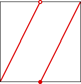
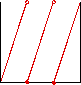
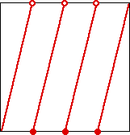

Something dynamics can tell us about number theory
A family of functions
We shall use a family of functions f
2
, f
3
, f
4
, f
5
, ..., all with domain and range
[0, 1].
Here are the graphs of the first three.



f
2
f
3
f
4
For example, f
2
(x) =
2x
for 0 ≤ x < 1/2
2x - 1
for 1/2 ≤ x ≤ 1
Return to
dynamics and number theory
.